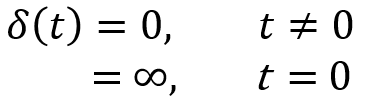
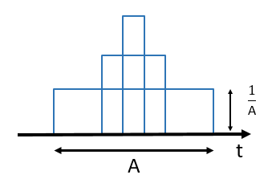
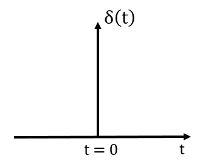
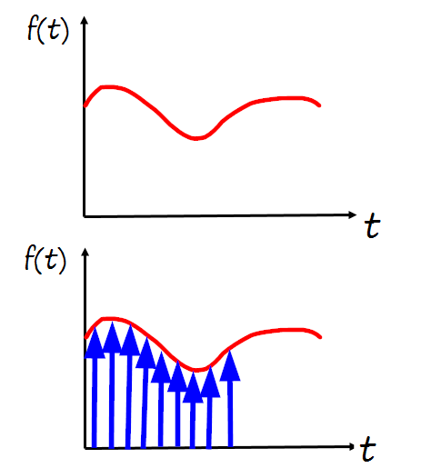
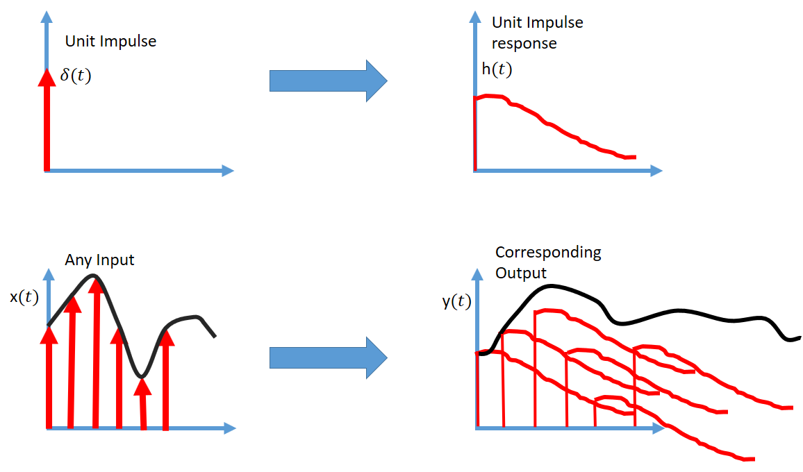
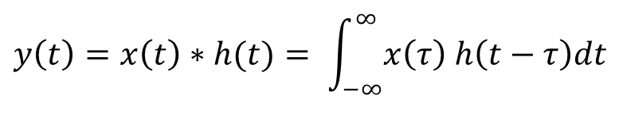
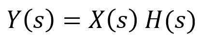

HOME BLOG EBOOKS ABOUT CONTACT SHOP
The Unit Impulse function is a very important function in Control systems and Signal Processing. Mathematically, it is defined as,

The Impulse signal can be imagined as a short pulse, like the output when a switch is turned on and off as fast as you can. But if the value of the Unit Impulse function is ∞ at t = 0, then why the name Unit Impulse function? The name comes from the fact that the Unit impulse function has a unit area at t =0, not its height. Consider a narrow rectangular pulse of width A and height 1/A, so that the area under the pulse = 1. Now if we go on reducing the width A and maintain the area as unity, then the height 1/A will go on increasing. Ultimately when A→ 0, 1/A→ ∞ and it results in a pulse of infinite magnitude.


The height of the arrow is used to depict the area of a scaled impulse. The unit Impulse function is also known as the delta function or the delta-dirac function.
The speciality of the Unit Impulse function is that any signal can be constructed out of scaled and shifted Unit Impulse signals (shown in figure below). This is called the Sifting property of Unit Impulse function.

When working with control systems, we would want to test out its response to a signal or a range of signals. How do we do that? Surely, we can't go around testing the response of every signal one after the other. It's too cumbersome and most times uneconomical. There's an easier way, using Unit Impulses. The idea is that by figuring out how the system responds to a Unit Impulse signal, we should be able to predict the system response to any input signal. The response of a system to a Unit Impulse signal is called the Unit Impulse Response (denoted by h(t)).

For LTI systems, the Impulse response is scaled and shifted by the same factor as the input Impulse signal. So the system response to any input can be obtained by summing up the scaled and shifted impulse responses (as shown in above figure).
Mathematically this operation can be done using the Convolution integral (denoted by * operator).

That's hard! Fortunately the convolution integral corresponds to simple multiplication in the Laplace domain.

Where H(s) is the Unit Impulse response in the Laplace domain, which by the way is the same as the Transfer function of the system.